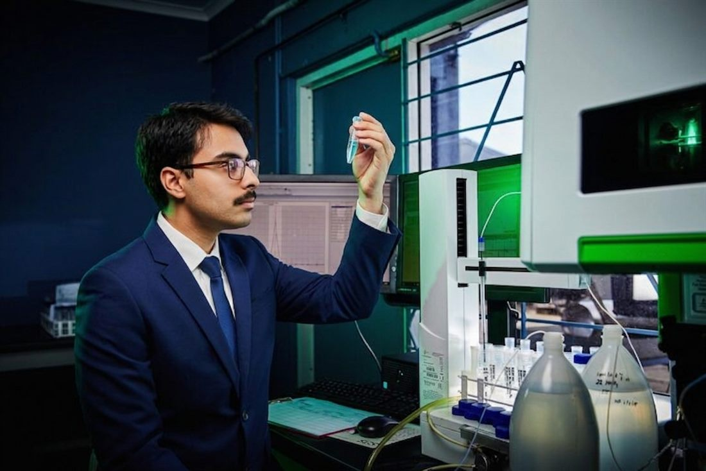
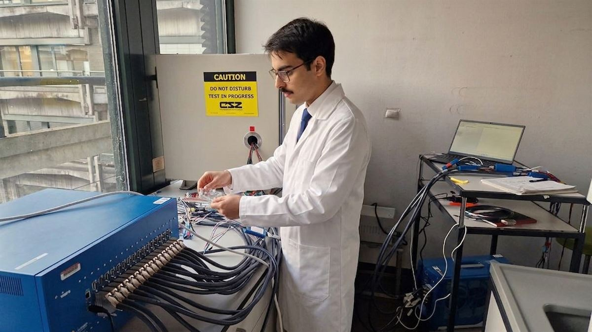

Hussnain Tariq — Production AI/ML Engineer · MSc Chemistry
I turn R&D data into production AI
Energytech · Greentech · Agritech · Foodtech · Biotech
About me

Most chemistry R&D teams have a problem they don’t talk about enough: they’re sitting on years of experimental data, and doing almost nothing with it.
Not because they don’t want to. But because the people who understand the chemistry can’t build the ML systems — and the people who can build the ML systems don’t understand the chemistry.
That gap is exactly where I work.
I’m Hussnain, an AI Engineer with a Chemistry MSc. I help deep-tech startups in energytech, greentech, agritech, foodtech and biotech turn their R&D data into production ML models that actually get used — not just published.
- I’m not a generalist ML engineer who learned some chemistry keywords.
- I’m not a chemist who took a few ML courses.
- I’ve spent years building at the intersection of both, and that’s a rare place to be.
If you’re a chemistry-native startup drowning in data but struggling to extract value from it — let’s exchange ideas.
Industries I work in
Most teams in these fields already have the chemistry and the data. What tends to be missing is the layer in between — someone who can read a lab notebook, build the model, and then run it as a service.

01 Energy Storage & Conversion
What I add Cycling, impedance and degradation data arrives noisy and split across instruments. I turn it into a versioned dataset, build capacity and lifetime models that carry their own uncertainty, and deploy them behind an API with drift monitoring — so the cell team queries a service instead of chasing a notebook.
02 Green Chemistry & Sustainability
What I add Catalyst and sorbent screening produces far more candidates than any lab can test. I build the ranking model and the pipeline around it — assay ingestion, cleaning, and an active-learning loop that names the next dozen experiments worth running.
03 Life Sciences & Biomedical Materials
What I add Assay data is messy, batch-effected and regulated. I build pipelines with a real audit trail — append-only logs, versioned datasets, reproducible runs — so a property-prediction model can survive a review, not just a demo.
04 Advanced Manufacturing & Structural
What I add Process–structure–property data is expensive and scattered across runs. I build the ingestion and versioning layer that makes it comparable, then the models that predict properties from composition and process parameters.
05 Consumer & Commercial Products
What I add Formulation knowledge lives in spreadsheets and in people’s heads. I turn a formulation history into a structured, queryable dataset and a stability and performance model — then the internal tool that lets a formulator use it without writing a line of code.
06 Electronics & Semiconductors
What I add High-throughput characterisation generates more data than anyone reads. I build the pipelines that clean and index it, and the models that surface the few candidates worth a second look.
07 Agriculture & Environmental
What I add Trial and soil data is heterogeneous and seasonal. I build the ingestion and modelling layer that turns scattered field data into release-rate and adsorption predictions you can actually plan around.